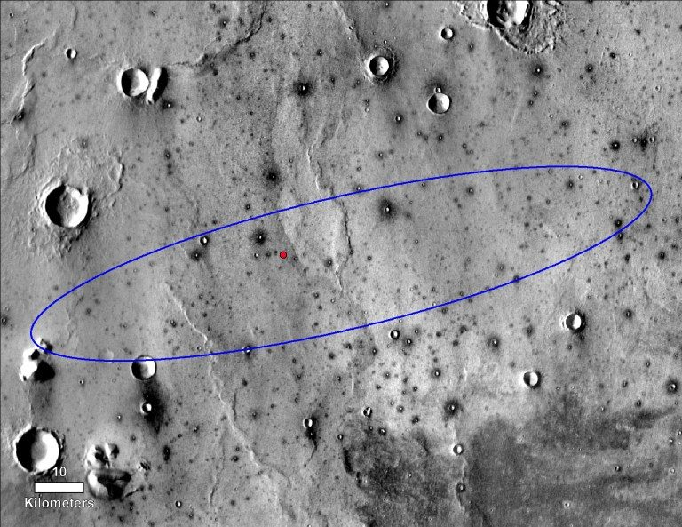
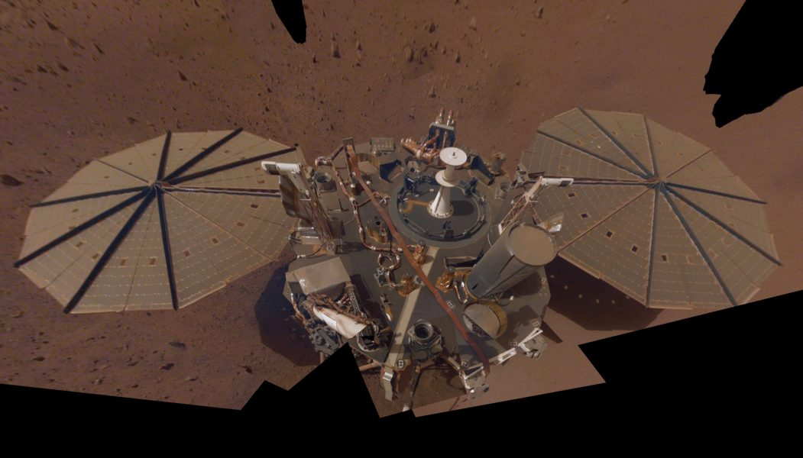
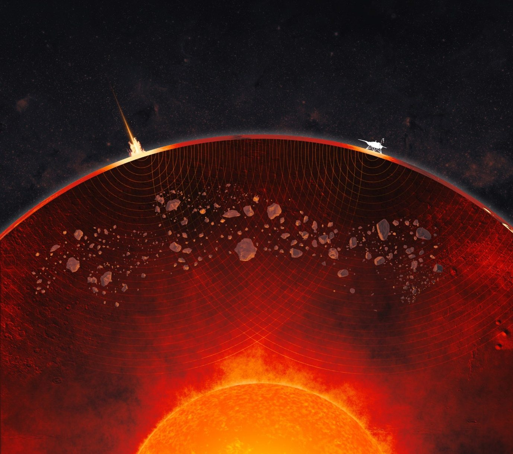
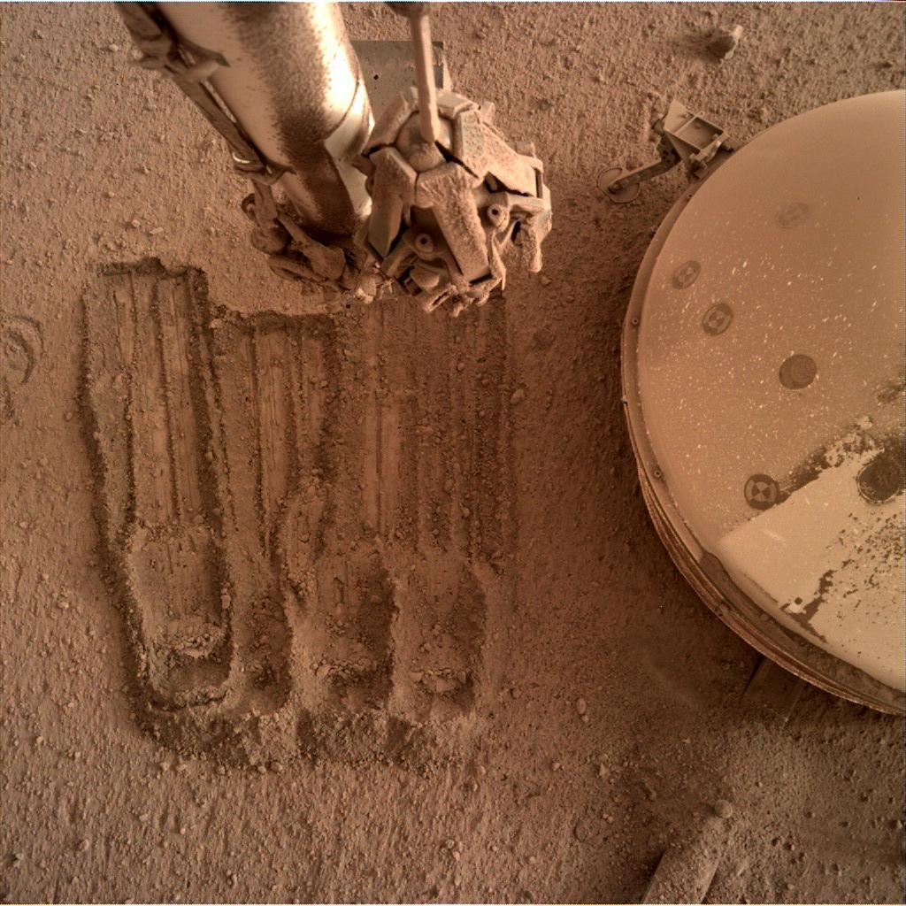

Home / Mars / Phoenix and InSight
Phoenix and InSight
One dug for ice, the other listened for marsquakes. Both ran out of sunlight.
Mars2008-2022Northern plains and Elysium Planitia

At a glance
| Phoenix launch | 4 Aug 2007 |
|---|---|
| Phoenix landing | 25 May 2008 |
| InSight launch | 5 May 2018 |
| InSight landing | 26 Nov 2018 |
| InSight instruments | SEIS seismometer, HP3 heat probe, RISE radio science |
Overview
Phoenix dug trenches with its arm and found bright material that vanished within days, proving it was ice that sublimated. The lander also detected perchlorate, a salt that can be toxic to life but may lower the freezing point of water. A laser instrument saw snow falling from clouds, showing weather as well as geology.
The InSight mission had two major goals, each with several science investigations, designed to help uncover the process that shaped all of the rocky planets in the inner solar system.
Where it began
Phoenix, landing in 2008, was built from parts of a lander lost earlier. InSight landed in 2018 as the first mission devoted to Mars's deep interior.
The lander was built on the proven design of NASA's Mars Phoenix lander. InSight's robotic arm was over 5 feet 9 inches (1.8 meters) long. It lifted a seismometer and heat flow probe from the deck and placed them on the surface.
The mission
Phoenix targeted the polar region near the north pole, while InSight sat on a flat plain near the equator, deploying instruments on the ground.
InSight landed near Mars' equator on the western side of a flat, smooth plain called Elysium Planitia. Elysium Planitia was selected not for its surface features, but for safety considerations. InSight's purpose was to study the interior of Mars, not the surface. Thus, in the selection of a landing site, what's on the surface mattered less than for previous rover missions focused on the geology.
Planitia is Latin for a flat surface, geometric plane, or flatness or a plain. Elysium is from the ancient Greek name for an afterlife paradise, usually referred to in English as the Elysian Fields. The landing site lies in the western portion of Elysium Planitia, centered at about 4.5 degrees north latitude and 135.9 degrees east longitude. This is just 373 miles (600 kilometers) from Curiosity’s landing site, Gale Crater.
Image Caption: The red dot marks the final landing location of NASA's InSight lander in this annotated image of the surface of Mars, taken by the THEMIS camera on NASA's 2001 Mars Odyssey orbiter in 2015. Credit: NASA/JPL-Caltech/ASU

How it worked
Phoenix's robotic arm scooped soil and exposed ice beneath. InSight put a seismometer on the ground and covered it with a wind shield; a heat probe designed to burrow into the soil never got deep enough.

Mars lacks the tectonic plates that produce the temblors many people in seismically active areas are familiar with. But there are two other types of quakes on Earth that also occur on Mars: those caused by rocks cracking under heat and pressure, and those caused by meteoroid impacts.
Of the two types, meteoroid impacts on Mars produce high-frequency seismic waves that travel from the crust deep into the planet’s mantle, according to a paper published earlier this year in Geophysical Research Letters. Located beneath the planet’s crust, the Martian mantle can be as much as 960 miles (1,550 kilometers) thick and is made of solid rock that can reach temperatures as high as 2,732 degrees Fahrenheit (1,500 degrees Celsius).
InSight sensors captured a haunting low rumble caused by vibrations from the Martian wind, estimated to be blowing at 10 to 15 mph (5 to 7 meters a second) on Dec. 1, 2018. The winds were consistent with the direction of dust devil streaks in the landing area, which were observed from orbit.
What it found
Phoenix confirmed shallow water ice and found perchlorate salts in the soil. InSight measured the crust, mantle and liquid core of Mars, and recorded meteoroid impacts.
Rocky material that impacted Mars lies scattered in giant lumps throughout the planet’s mantle, offering clues about Mars’ interior and its ancient past.
What appear to be fragments from the aftermath of massive impacts on Mars that occurred 4.5 billion years ago have been detected deep below the planet’s surface. The discovery was made thanks to NASA’s now-retired InSight lander, which recorded the findings before the mission’s end in 2022. The ancient impacts released enough energy to melt continent-size swaths of the early crust and mantle into vast magma oceans, simultaneously injecting the impactor fragments and Martian debris deep into the planet’s interior.
There’s no way to tell exactly what struck Mars: The early solar system was filled with a range of different rocky objects that could have done so, including some so large they were effectively protoplanets. The remains of these impacts still exist in the form of lumps that are as large as 2.5 miles (4 kilometers) across and scattered throughout the Martian mantle. They offer a record preserved only on worlds like Mars, whose lack of tectonic plates has kept its interior from being churned up the way Earth’s is through a process known as convection.

“We’ve never seen the inside of a planet in such fine detail and clarity before,” said the paper’s lead author, Constantinos Charalambous of Imperial College London. “What we’re seeing is a mantle studded with ancient fragments. Their survival to this day tells us Mars’ mantle has evolved sluggishly over billions of years. On Earth, features like these may well have been largely erased.”
The new Science paper identifies eight marsquakes whose seismic waves contained strong, high-frequency energy that reached deep into the mantle, where their seismic waves were distinctly altered.
Using planetwide computer simulations, the team saw that the slowing down and scrambling happened only when the signals passed through small, localized regions within the mantle. They also determined that these regions appear to be lumps of material with a different composition than the surrounding mantle.
Turning back the clock, they concluded that the lumps likely arrived as giant asteroids or other rocky material that struck Mars during the early solar system, generating those oceans of magma as they drove deep into the mantle, bringing with them fragments of crust and mantle.
Charalambous likens the pattern to shattered glass — a few large shards with many smaller fragments. The pattern is consistent with a large release of energy that scattered many fragments of material throughout the mantle. It also fits well with current thinking that in the early solar system, asteroids and other planetary bodies regularly bombarded the young planets.
And in that way, Mars could point to what may be lurking beneath the surface of other rocky planets that lack plate tectonics, including Venus and Mercury.
Why it was left behind
Both were solar-powered. Phoenix lost sunlight as northern winter closed in, and contact ended in November 2008. Dust slowly coated InSight's panels until it could not run its instruments.
Where it is now
Phoenix sits frost-covered in the arctic. InSight sits on Elysium Planitia, its last selfie showing dust-covered panels.

NASA's InSight Mars lander acquired this image using its robotic arm-mounted, Instrument Deployment Camera (IDC).
This image was acquired on October 17, 2022, Sol 1383 where the local mean solar time for the image exposures was 17:21:10.076 PM. Each IDC image has a field of view of 45 x 45 degrees.
InSight's seismometer worked so well that it heard the planet's interior directly. Researchers measured the thickness of the crust, the mantle layers, and a molten core. Marsquakes were weaker and rarer than on Earth. Dust gradually covered the panels, leaving too little power for science.
Timeline of events
- Jun 2008 Phoenix confirms bright chunks are water ice
- 2 Nov 2008 Last contact with Phoenix
- 19 Dec 2018 InSight places its seismometer on the ground
- 2019-2021 The heat probe repeatedly fails to dig in
- 4 May 2022 Magnitude 5 marsquake recorded
2022
InSight mission ended 21 December after dust covered its panels.
Read more on NASAText and images adapted from NASA mission pages.